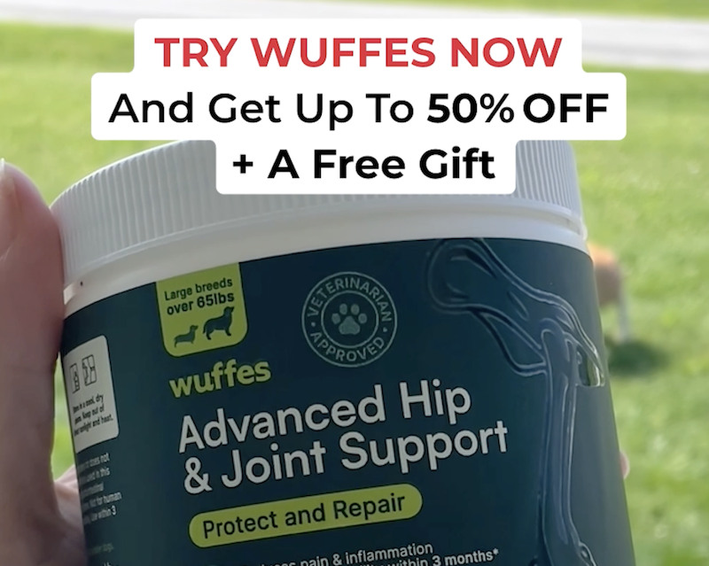

I never knew I needed these joint pain supplements. Now I can't imagine my dog living without them!
If you have a dog, seeing how we helped Molly go from limping and in pain to sprinting the park again like a young pup will be the best thing you read today.
For most of her life shouting "Molly!" resulted in seeing her big bright eyes in the doorway in seconds. When she started taking minutes... we know something was up.
Then we noticed her sitting sideways.
Molly was doing a good job at hiding her pain from us. She's proud like that. I'm sure she didn't want us to worry. I read it's a dog's survival instinct to not appear weak.
Naturally we needed help to figure out the problem. We took Molly to our vet. The response we were given was not what we wanted to hear...
"Nothing we can do."
Our vet said age comes for us all and Molly had only a few more months left. Feeling like we were out of options, we started preparing for her departure.
I was too sad to sleep. So I did what most people do when they lay in bed awake at 3am, check Facebook from my phone.
I follow all types of pages about dogs, so that must have been why I was shown an ad from Wuffes. The video featured the company's founder who explained how his dog suffered from arthritis and couldn't find a solution.
Instead of giving up (like we were about to do), he started a company that provides dogs the nutrients they help their joint pain.
His company became wildly successful and I of course had to try.
The video said they had 400,000 happy dog owners. Well, I'm excited to share I'm happy customer number 400,001!
After just three weeks of using Wuffes Molly's limp was gone and she was running around our home again like a young pup!
Old age is inevitable but for now we're glad to have prolonged it.
If you want to try Wuffes, you'll find the best deals on their official website. They offer a 100% money-back guarantee for 90 days. Even if your dog isn't experiencing a limp now, giving them Wuffes helps keep their joints healthy and flexible!
